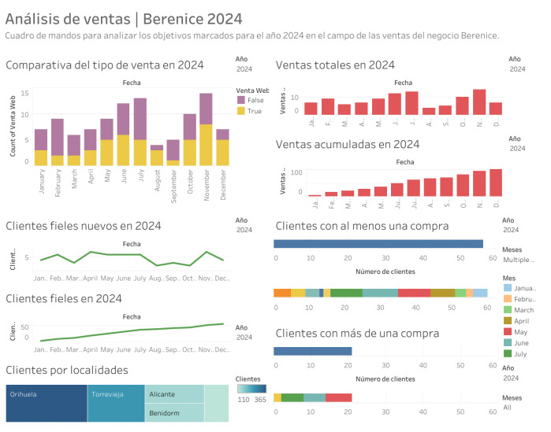

Sobre mí
Matemática especializada en análisis de datos. Estudiante de Máster en Big Data.

Proyectos
Análisis de ventas de un negocio local (Tableau)
Análisis de KPIs, desarrollo de objetivos y explicación del proceso completo. Reporte con gráficas y dashboard.
Dashboard de importaciones de especias (Power BI)
Análisis de las importaciones de especias a Estados Unidos. Limpieza de datos, visualización y dashboard interactivo.

Formación
Grado en Matemáticas · Universidad de Valladolid
Máster en Big Data · UNIR